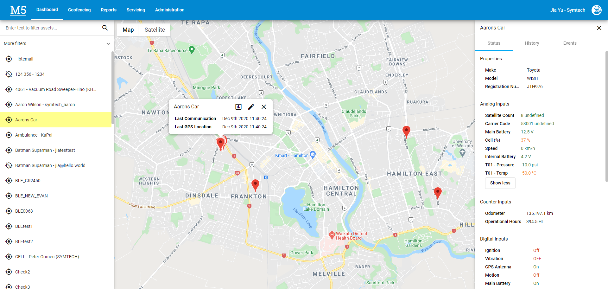
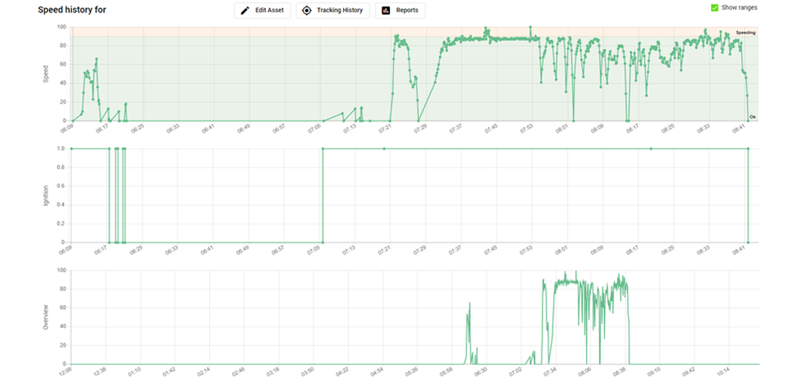

Machinery Fleet Management Systems In Use
Examples of how M5 can be used.
Here are two of many examples which illustrate how our system has been used to quickly locate and check machine performance fast. In many cases, if the M5 System had not been in place, the issue would have gone unnoticed and unnecessary damage or breakdown could easily have occurred as a result.
Example 1
​The M5 dashboard showing the search result for a specific unit location on the map. The column on the right shows the status of various inputs from the unit. You can generate graphical reports by clicking on the links in the right column. The left side column shows other units you can click on to display their whereabouts or use the search feature to locate them.
Example 2
Having selected the links for the reports you wish to view , you can easily see how the unit has been performing in the field. Compare different aspects of the machines performance and drill down to finer details and time periods for exact measurements. This also enables you to monitor if your machine is being fully utilized.